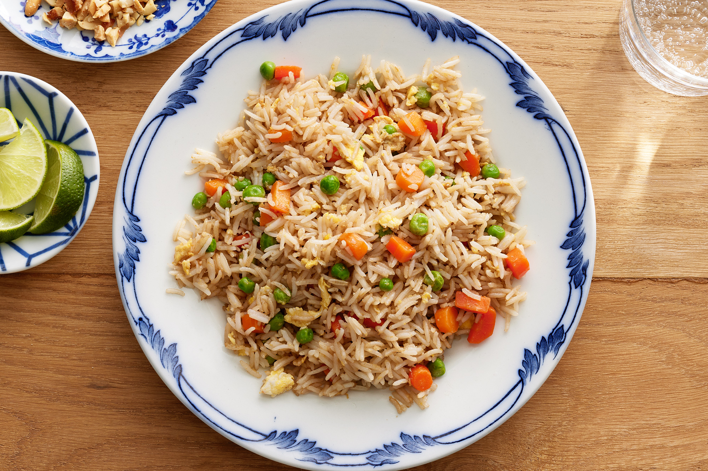

Fried Rice
Fried rice is a staple of Asian cuisine. Typically
it is cooked using leftover rice, as the rice has
been dehydrated and cooled down so the heat doesn't
overcook it. A simple dish, it serves as a way to cook
in any leftover rice with whatever ingredients lie
within the fridge from previous days.

Ingredients
- Leftover Rice
- Frozen Mixed Vegetables
- Eggs
- Shrimp
Cooking Instructions
- Fry the eggs first and scramble
- Add frozen vegetables until hot
- Stir in leftover rice
- Add in 1 part light soy sauce, 1 part
dark soy sauce
- Add shrimp to the mix and cook until pink
- Remove from heat and serve